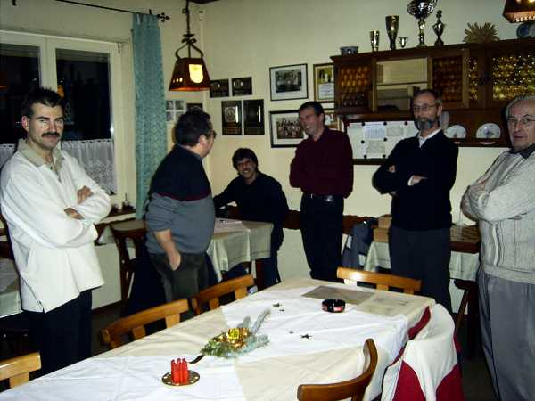
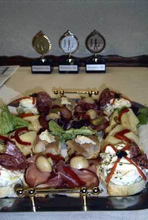
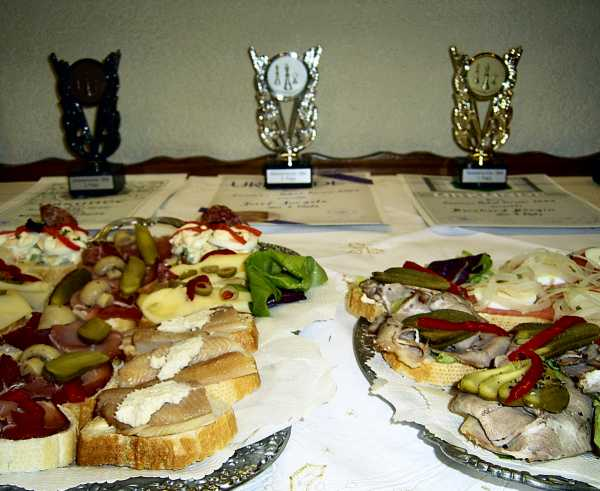
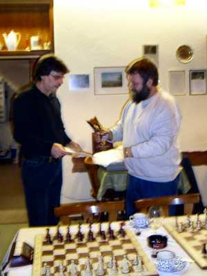
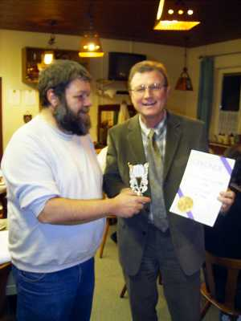
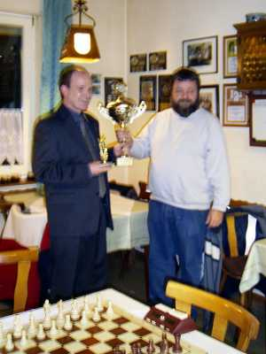
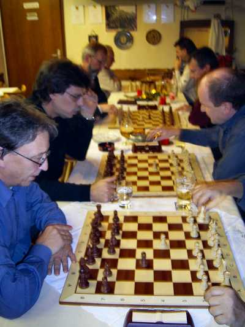
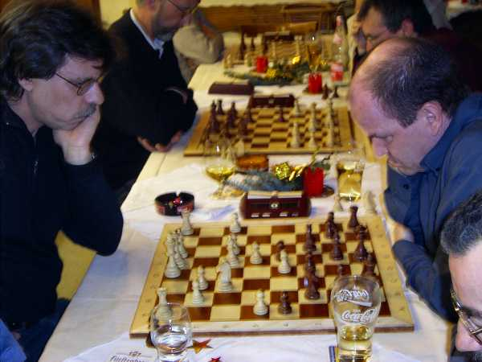

07.12.04
Ehrungen Sommerpokal
und
Nikolausblitzturnier

Die Mannschaft versammelt sich.

Und wieder einmal war...

... ein "kleiner" Imbiss vorbestellt.
Ehrung für das Sommerpokalturnier 2004
 
Platz 3: Wolfgang Scheina Platz
2: Josef Jurgetz

Der Sieger: Bernhard Bürgin

Ein Bild für die Presse (leider war Josef noch nicht anwesend)
Das Blitzturnier beginnt:


Die späteren Spitzenreiter bei der Sache

Leider hatte meine Kamera an diesem Abend leichte Schärfeprobleme.
weswegen
auch nicht mehr Bilder zu sehen sind...

Der Bericht in der Badischen Zeitung vom 9.12.04:

Und das meinte der Südkurier am 10.12.04: